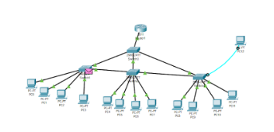
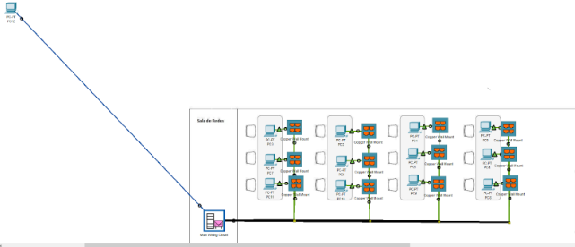
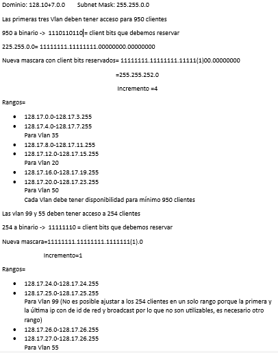
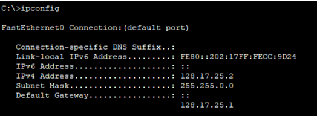
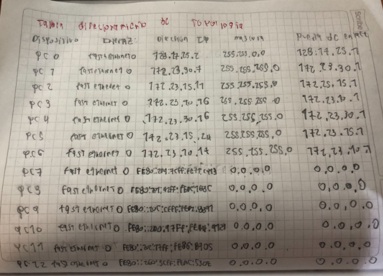
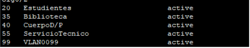

Descripción
En este laboratorio se procede a analizar más a detalle los conceptos relacionados al subneteo (subnetting) el cual nos permite dividir una red de dirección ip, (la cual puede tener variaciones las cuales conocemos como clases) en otras subredes con el fin de que cada una de esas divisiones de redes obtenidas mediante el subnetting puedan trabajar como una sola pero en un solo dominio en la topología que se establezca y así mismo asignarles sus respectivas interfaces con el fin de que la topología funcione de la forma adecuada lo cual nos permita realizar un buen análisis del tráfico de red y conectividad entre los distintos dispositivos presentes en la simulación de sala de redes resolviendo incógnitas durante los procesos hechos.
Resumen
Principalmente En la práctica de laboratorio se tomó como material de referencia un montaje de cableado estructurado de una topología sala de redes de computadores, y a estos respectivos dispositivos se les debe ser asignadas unas vlans las cuales son las respectivas redes de área local que podemos encontrar con el proceso de subneteo mencionado previamente y así antes proceder con un testeo relacionado al sistema de comandos de administrador el cual nos permite realizar la configuración de estas redes de área local respectivas para cada computador y permitir un mejor orden y funcionamiento en el sistema para toda la topología en general, las rutas de acceso de las redes las cuales van relacionadas al proceso de subnetting, y cada computador y permitir que tambien se creen redes independientes a pesar de que pertenecen a la misma topología, dominio de red y sistema de red a nivel general abarcando los computadores, switches y router.
Abstract
Mainly In the laboratory practice, a structured cabling assembly of a computer network room topology was taken as reference material, and these respective devices must be assigned some vlans which are the respective local area networks that we can find with the previously mentioned subnetting process and thus before proceeding with a test related to the administrator command system which allows us to configure these respective local area networks for each computer and allow a better order and operation in the system for the entire topology in general, the access routes of the networks which are related to the subnetting process, and each computer and allow independent networks to be created even though they belong to the same topology, network domain and network system level General covering computers, switches and router.
Elementos de red usados en la simulación
| Elemento | Descripción |
|---|---|
| Dispositivos Inteligentes | Aparatos electrónicos que pueden conectarse, compartir información e interactuar con los usuarios y con otros dispositivos inteligentes, mediante una red LAN. En este laboratorio se simulo una PC, dos laptops y un smartphone |
| Router | Es un hardware el cual a diferencia del módem permite la conexión de uno o más dispositivos a una red local la cual está a su vez obtiene acceso al internet y estos pueden gestionar el tráfico de la información transmitida entre los dispositivos que se encuentren conectados a la red local los cuales estarán asignados con una dirección ip la cual es diferente en cada dispositivo conectado, hablando de la información transmitida por este dispositivo, este proceso del paso de la información se realiza por paquetes de datos los cuales cuentan con sus secciones/capas de las cuales se pueden identificar: el emisor, tipo de información, y hacia dónde se dirige esta información. Estos son los más utilizados en las empresas hoy en día debido a que permiten una conexión práctica con varios dispositivos de empleados a la vez que se puede gestionar su propia seguridad con el uso de software protegiendo de posible malware y sitios web no deseados para una red local de hogar o compañía. |
| Switch | Consisten en puntos de acceso a red que se conectan a dispositivos los cuales pueden tener conexión de tipo cable o inalámbrica y se permite el intercambio de información entre varios dispositivos entre sí. |
| VLAN | Consiste en un conjunto de dispositivos, computadoras o LAN los cuales son organizados de tal forma que solo haya un dominio de difusión. |
| LAN | Este apartado ya consiste en un grupo aparte de puertos de conexiones disponibles los cuales pueden favorecer a un único dispositivo o varios. |
| Subnetting | El Subnetting consiste en subdividir una gran red IP en varias redes lógicas, de forma que cada una de estas subnets funcionen como una red individual aunque sigan perteneciendo a una misma red principal y a un mismo dominio. |
Montaje y configuración
Para el montaje de la topología se siguió trabajando con el mismo montaje del laboratorio pasado. Este consistía en la configuración de dispositivos de red a un protocolo STP de tres switches y un Router que les permitía acceso. Para este montaje, se incluyó un cuarto switch al spanning tree protocol y un total de 12 PCs que se asignaban a Vlans distintas. Teniendo esto en cuenta la topología lógica quedó de la siguiente manera:
Y la topología fisica de la siguiente manera:
Una vez realizada la topología en cisco procedemos a el subneteo de la red que nos pide el administrador, en nuestro caso la direccion es 128.17.0.0/16, debemos hallar la forma en que cada Vlan tenga el espacio de direccionamiento suficiente para los clientes de cada una, para esto se realizó el proceso de subneteo de la red para esto realizamos el siguiente proceso:
Donde para las Vlans 35, 20, 50 que son de 950 clientes cada una se paso el número de clientes (950) a binario y con eso creamos la nueva máscara de de subred, y con eso hallamos el número de incremento que en nuestro caso es 4, lo mismo para las vlans 99 y 55, pero el número de incremento es 1.
2.Tabla de direccionamiento de toda la topología
Ya realizadas la configuraciones del router y del switch procedemos con la verificación de la IP, para esto utilizamos el comando de “ipconfig” en la consola de cada PC, y observamos lo siguiente:
La dirección IP, en este caso del PC0 se ha asignado correctamente, teniendo en cuenta la tabla de direccionamiento, el PC0 está asignado para Vlan 55, por lo tanto la IP está correcta, lo mismo pasa con los otros PCs y están asignados correctamente de acuerdo a las Vlans a las que pertenecen.
Aca podemos observar la tabla con el resto de computadores conectados en la topología física de red:
Para realizar la Verificación de las Vlans, utilizamos el comando “Show Vlan”, en el switch correspondiente, estos fueron los resultados:
Para verificar la conexión entre Vlans se usa el comando “ping” mas la dirección del dispositivo al que desea conocer la conectividad, para verificar la conexión de la puerta de enlace se usa el comando “ping” también pero la direccion sera a la puerta de enlace, teniendo en cuenta que se haya realizado correctamente la configuración del router para la conexión de inter-vlan si se podria comunicar los pcs de vlans distintas ya que el router permite que las vlans están conectadas y haya paso de información.
Para realizar la si es posible el telnet se utiliza el comando “telnet” más la dirección de la subinterfaz de las Vlan.
Conclusiones
Primeramente, este ejemplo fue de mucha utilidad para el manejo de los métodos para división de redes técnicamente independientes, pero que aún se mantienen pertenecientes al mismo dominio y sistema y/o sala de redes y así mismo permitir el ingreso de más direcciones para los clientes y ver que más posibilidades de conexión de dispositivos según las direcciones ip y configuraciones respectivas, ciertas rutas de red pueden ser habilitadas o no para los dispositivos entrantes y por que interfaces deben pasar para hacer una transferencia de datos de forma digital.
También se ha de mencionar que esta simulación permitió la aplicación de las redes de área local o VLANS ya que acá se manejan direcciones de ip de clases y tipos diferentes de ip, en este caso se hizo uso de las versiones 4 y 6 del ip, además de usar las puertas de enlace y las máscaras de subred para realizar los procesos que se pidieron del subnetting de acuerdo al número de clientes especificados para cada vlan.